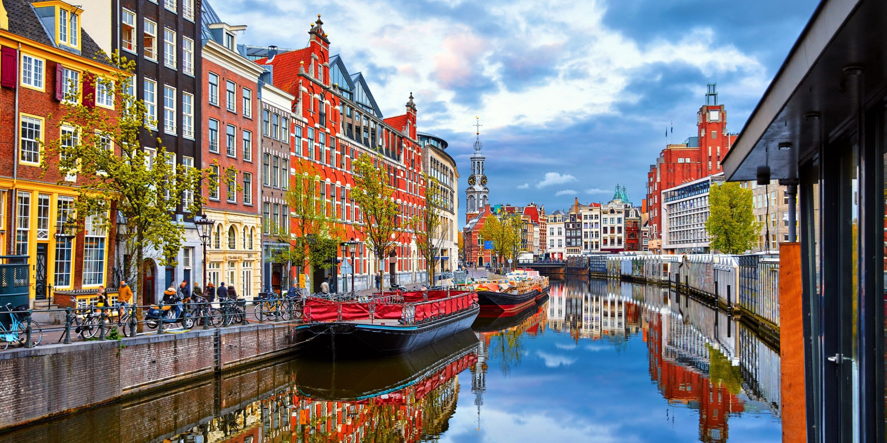

Travel always keeps things interesting
Never a dull moment, a relationship with travel ensures excitement at every turn. Rather than feeling tied down to one place or one way of living, you can always move on to the next adventure. Everywhere you go, the next adventure is waiting for you, and you can take as long as you need to get there.Walt Disney said it best: “We keep moving forward, opening new doors, and doing new things, because we’re curious and curiosity keeps leading us down new paths.”
Our greatest joys come from life’s little surprises. On our travels, there are new paths waiting at each and every turn.Travel is patient, kind, and will not hide itself from you. You may not get to know a destination right away—like any good relationship, it takes time and work before you reveal yourselves to each other. But once you do, you know you’ve found something honest and authentic: your one true love.Travel is patient, kind, and will not hide itself from you. You may not get to know a destination right away—like any good relationship, it takes time and work before you reveal yourselves to each other. But once you do, you know you’ve found something honest and authentic: your one true love.Travel is patient, kind, and will not hide itself from you. You may not get to know a destination right away—like any good relationship, it takes time and work before you reveal yourselves to each other. But once you do, you know you’ve found something honest and authentic: your one true love.Travel is patient, kind, and will not hide itself from you. You may not get to know a destination right away—like any good relationship, it takes time and work before you reveal yourselves to each other. But once you do, you know you’ve found something honest and authentic: your one true love.
London, the capital of England and the United Kingdom, is a 21st-century city with history stretching back to Roman times. At its centre stand the imposing Houses of Parliament, the iconic ‘Big Ben’ clock tower and Westminster Abbey, site of British monarch coronations. Across the Thames River, the London Eye observation wheel provides panoramic views of the South Bank cultural complex, and the entire city.

Amsterdam is the Netherlands’ capital, known for its artistic heritage, elaborate canal system and narrow houses with gabled facades, legacies of the city’s 17th-century Golden Age. Its Museum District houses the Van Gogh Museum, works by Rembrandt and Vermeer at the Rijksmuseum, and modern art at the Stedelijk. Cycling is key to the city’s character, and there are numerous bike paths.
Paris, France's capital, is a major European city and a global center for art, fashion, gastronomy and culture. Its 19th-century cityscape is crisscrossed by wide boulevards and the River Seine. Beyond such landmarks as the Eiffel Tower and the 12th-century, Gothic Notre-Dame cathedral, the city is known for its cafe culture and designer boutiques along the Rue du Faubourg Saint-Honoré.
Barcelona, the cosmopolitan capital of Spain’s Catalonia region, is known for its art and architecture. The fantastical Sagrada Família church and other modernist landmarks designed by Antoni Gaudí dot the city. Museu Picasso and Fundació Joan Miró feature modern art by their namesakes. City history museum MUHBA, includes several Roman archaeological sites.
SPORTS
“Sports has the power to change the world. It has the power to inspire. It has the power to unite people in a way that little else does. It speaks to youth in a language they understand. Sports can create hope where once there was only despair. It is more powerful than government in breaking down racial barriers.”We love sports because while they can be defined by rules and regulations, they allow us to be free in a way that could never be described. We love sports for the endorphins and the sweat and the smiles, and even for the blood and the tears.
We love sports because they allow us to escape the norm and feel as extraordinary as our favorite athletes. We love sports because we love having fun—whether we have athletic ability or not. We love little leagues, church leagues, and beer leagues. We love to watch sports on TV, listen to them on the radio, and sweat in the sun to watch from the stadium.
We love sports because they bring people of every race and religion together, despite differing sport or team allegiances. We love sports because a conflict on the field ends once you walk off the field, unlike the conflicts we face in our everyday lives. We love sports because they unite us instead of dividing us. No one bats an eye when a Bears fan sits with a Packers fan to enjoy a brew and a friendly argument.
We love sports because they break more than just racial barriers. Sports question gender roles and assess morality and fairness. We love sports because we love heroes. We love underdogs. We love competition—friendly or not. We love sports because nothing else can bring representatives from every country to the same place for a common cause.